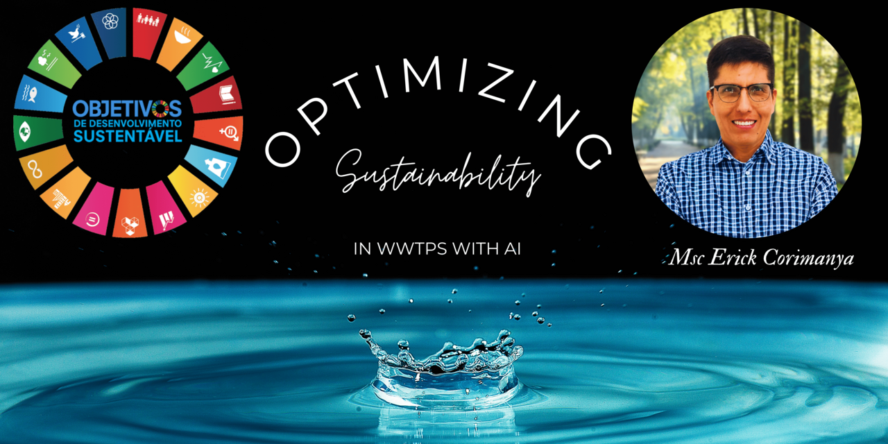

About Me
I’m Erick Mauricio Corimanya, a Peruvian chemical engineer based in Brazil, with a strong background in water and sanitation systems, sustainability, and environmental engineering.
Academic & Professional Background
- BSc in Chemical Engineering – UNSAAC (National University of San Antonio Abad del Cusco), Peru
- MSc in Water, Sanitation & Health Engineering – University of Leeds (UK)
- MSc in Sustainability – University of São Paulo (USP, Brazil)
- Former consultant for Hydroconseil (France) and the Inter-American Development Bank (IDB)
- Former lecturer in Wastewater Treatment – National University of Callao (Peru)
- 10+ years of experience in water & sanitation projects across Latin America
Research Focus (PhD)
Project Title:
Multi-objective Optimization of Wastewater Treatment Plants Using Reinforcement Learning: A Simulation-Based and Sustainability-Oriented Approach.
Applying AI (Reinforcement Learning) to improve energy efficiency, effluent quality, and reduce emissions in WWTPs — especially in developing countries.
Research Interests
- Wastewater treatment technologies
- Reinforcement learning for environmental applications
- Multi-objective optimization
- Sustainability and resilient infrastructure
- Public water and sanitation systems
Contact
Thanks for visiting! Feel free to explore my work or reach out for collaborations in environmental research, sustainability, or digital solutions for water systems.